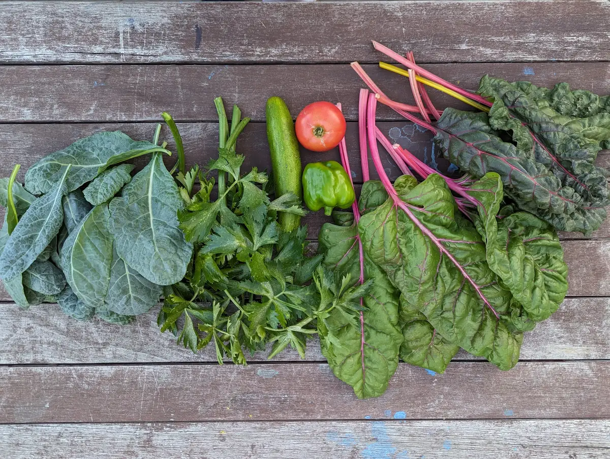

What you can grow in a tower
Leafy greens, herbs, fruiting vegetables, and flowers. Each time we replant, we suggest varieties to match the season and your taste.

Where your tower lives
Indoor towers
With LED grow lights, an indoor tower can grow almost everything on this page, all year round.
Outdoor towers
Plants marked ☀ need strong sunlight, so they grow best in an outdoor tower on a balcony, terrace, or rooftop. What grows well outdoors also changes with the season.
Autumn picks for outdoor towers
Easy-to-grow varieties for outdoor towers in Tokyo’s autumn and early winter. Indoor towers can grow almost anything year-round.
Leafy greens
- Lettuces (all types)
- Kale (all types)Gets sweeter in the cold, until December
- Arugula
- Komatsuna
- SpinachIn season now; slow to bolt
- Mizuna
- Wasabina
- Shungiku
- Pak choi
- Swiss chard
- Corn salad / mâche
- Watercress
Herbs
- CilantroLikes the cool weather; slow to bolt
- Parsley
- Chives
- DillUntil early October
Fruiting vegetables
- Snap peaSow now for a winter to early-spring harvest; needs support
- Snow peaSow now for a winter to early-spring harvest; needs support
- Broad (fava) beanSow in autumn, overwinters; needs support
Edible flowers
- Viola / pansyThe star of winter, October to spring
- CalendulaFlowers through winter if it's mild
- Dianthus
- CornflowerSow in autumn, overwinters, blooms in spring
- NasturtiumUntil early October (frost-tender)
Avoid basil, green shiso, and lemon balm outdoors at this time of year: they can’t handle the cold.
Some of the things you can grow
☀ = best grown outdoors. Needs strong light; not suited to indoor towers.
Leafy greens
- Romaine lettuce
- Chima sanchu
- Sunny / red leaf lettuce
- Butterhead lettuce
- Frilled lettuce
- Arugula
- Kale (many varieties)
- Mizuna
- Komatsuna
- Wasabina
- Watercress
- Corn salad / mâche
- Spinach
- Swiss chard
- Shungiku
- Italian shungiku
Fruiting vegetables
- Mini tomato ☀
- Cucumber ☀
- Bell pepper ☀
- Shishito pepper ☀
- Paprika ☀
- Eggplant ☀
- Okra ☀
- Zucchini ☀
- Bitter melon ☀
- Bush bean ☀
- Pole bean ☀
- Snap pea ☀
- Snow pea ☀
- Edamame ☀
- Pumpkin (kabocha) ☀
- Mini watermelon ☀
- Melon ☀
- Lemon cucumber ☀
Herbs
- Sweet basil
- Lemon basil
- Cinnamon basil
- Purple basil
- Green shiso
- Red shiso
- Spearmint
- Peppermint
- Oregano
- Thyme
- Rosemary
- Sage
- Dill
- Chervil
- Chives
- Nira (garlic chives)
- Cilantro
- Italian parsley
- Curled parsley
- Lemon balm
- Chamomile
- Sweet marjoram
- Stevia
- Catmint
- Green onion
Edible flowers
- Nasturtium
- Viola
- Pansy
- Calendula ☀
- Borage ☀
- Cornflower ☀
- Dianthus
- Snapdragon
- Marigold
- Petunia
Ornamental flowers
- Dwarf sunflower ☀
- Zinnia ☀
- Morning glory ☀
- Sweet pea ☀
- Aster
- Impatiens
- Poppy
- Salvia
- Statice
- Stock
- Verbena
Varieties are subject to availability, and special-order items may need extra lead time. Root crops (carrots, radishes, and so on) and heading types are not suited to tower growing. Questions? info@greentopia.jp